In this exercise we will use a support vector classifier with a linear kernel. We start by generating observations from two classes using the rnorm() function.
set.seed(1)
x <- matrix(rnorm(20 * 2), ncol = 2)
y <- c(rep(-1, 10), rep(1, 10))
x[y == 1, ] <- x[y == 1, ] + 1
plot(x, col = (3 - y))
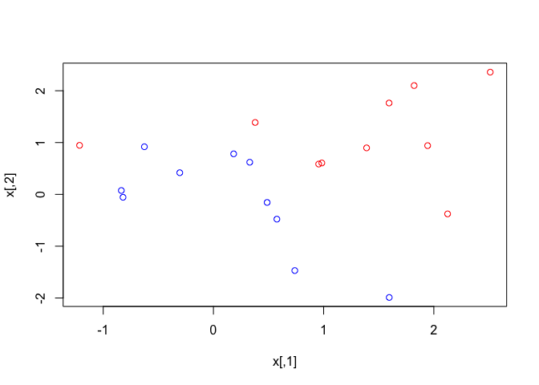
The e1071 package provides functionality to fit a Support Vector Machine classifier.
dat <- data.frame(x = x, y = as.factor(y))
library(e1071)
svmfit <- svm(y ~ ., data = dat, kernel = "linear", cost = 10, scale = FALSE)
The fitted model from the svm() function can be plotted with plot().
plot(svmfit, dat)
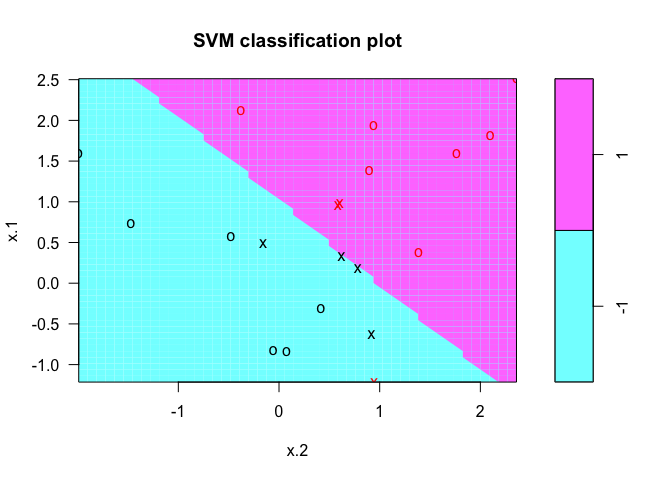
We can inspect the support vectors with the index component of the classifier returned from svm().
svmfit$index
## [1] 1 2 5 7 14 16 17
The summary() function can be used to print a summary of the classifier.
summary(svmfit)
##
## Call:
## svm(formula = y ~ ., data = dat, kernel = "linear", cost = 10,
## scale = FALSE)
##
##
## Parameters:
## SVM-Type: C-classification
## SVM-Kernel: linear
## cost: 10
## gamma: 0.5
##
## Number of Support Vectors: 7
##
## ( 4 3 )
##
##
## Number of Classes: 2
##
## Levels:
## -1 1
We can change the cost parameter and re-run the classifier to see how the support vectors change.
svmfit <- svm(y ~ ., data = dat, kernel = "linear", cost = 0.1, scale = FALSE)
plot(svmfit, dat)
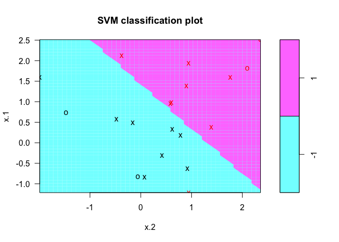
svmfit$index
## [1] 1 2 3 4 5 7 9 10 12 13 14 15 16 17 18 20
We can run cross-validation on a range of values for the cost parameter using the tune() function.
set.seed(1)
tune.out <- tune(svm, y ~ ., data = dat, kernel = "linear", ranges = list(cost = c(0.001, 0.01, 0.1, 1, 5, 10, 100)))
summary(tune.out)
##
## Parameter tuning of 'svm':
##
## - sampling method: 10-fold cross validation
##
## - best parameters:
## cost
## 0.1
##
## - best performance: 0.1
##
## - Detailed performance results:
## cost error dispersion
## 1 1e-03 0.70 0.4216370
## 2 1e-02 0.70 0.4216370
## 3 1e-01 0.10 0.2108185
## 4 1e+00 0.15 0.2415229
## 5 5e+00 0.15 0.2415229
## 6 1e+01 0.15 0.2415229
## 7 1e+02 0.15 0.2415229
The best performing model is stored in the best.model component of the object returned from tune().
bestmod <- tune.out$best.model
summary(bestmod)
##
## Call:
## best.tune(method = svm, train.x = y ~ ., data = dat, ranges = list(cost = c(0.001,
## 0.01, 0.1, 1, 5, 10, 100)), kernel = "linear")
##
##
## Parameters:
## SVM-Type: C-classification
## SVM-Kernel: linear
## cost: 0.1
## gamma: 0.5
##
## Number of Support Vectors: 16
##
## ( 8 8 )
##
##
## Number of Classes: 2
##
## Levels:
## -1 1
We can also classify a different set of observations using the best model obtained from tune(). First we create a new set of observations with the rnorm() function.
xtest <- matrix(rnorm(20 * 2), ncol = 2)
ytest <- sample(c(-1, 1), 20, rep = TRUE)
xtest[ytest == 1, ] <- xtest[ytest == 1, ] + 1
testdat <- data.frame(x = xtest, y = as.factor(ytest))
We can then use the predict() function to classify the observations in testdat.
ypred <- predict(bestmod, testdat)
table(predict = ypred, truth = testdat$y)
## truth
## predict -1 1
## -1 11 1
## 1 0 8
We can also try a different value for the cost parameter and train the classifier again.
svmfit <- svm(y ~ ., data = dat, kernel = "linear", cost = 0.01, scale = FALSE)
ypred <- predict(svmfit, testdat)
table(predict = ypred, truth = testdat$y)
## truth
## predict -1 1
## -1 11 2
## 1 0 7
We can linearly separate the two classes and plot the observations.
x[y == 1, ] <- x[y == 1, ] + 0.5
plot(x, col = (y + 5)/2, pch = 19)
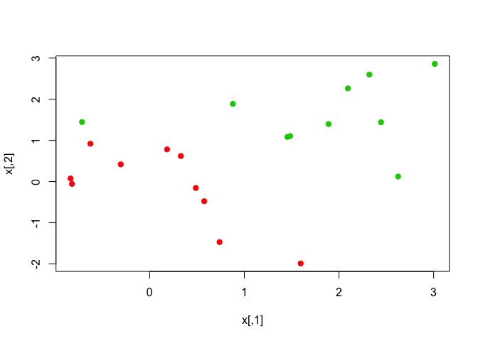
We can fit a classifier with a large value for the cost parameter to see how the observations are classified.
dat <- data.frame(x = x, y = as.factor(y))
svmfit <- svm(y ~ ., data = dat, kernel = "linear", cost = 1e+05)
summary(svmfit)
##
## Call:
## svm(formula = y ~ ., data = dat, kernel = "linear", cost = 1e+05)
##
##
## Parameters:
## SVM-Type: C-classification
## SVM-Kernel: linear
## cost: 1e+05
## gamma: 0.5
##
## Number of Support Vectors: 3
##
## ( 1 2 )
##
##
## Number of Classes: 2
##
## Levels:
## -1 1
plot(svmfit, dat)
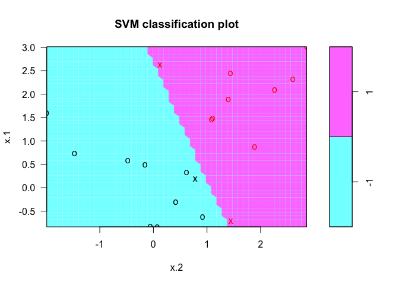
We can also try with a a smaller cost value.
svmfit <- svm(y ~ ., data = dat, kernel = "linear", cost = 1)
summary(svmfit)
##
## Call:
## svm(formula = y ~ ., data = dat, kernel = "linear", cost = 1)
##
##
## Parameters:
## SVM-Type: C-classification
## SVM-Kernel: linear
## cost: 1
## gamma: 0.5
##
## Number of Support Vectors: 7
##
## ( 4 3 )
##
##
## Number of Classes: 2
##
## Levels:
## -1 1
plot(svmfit, dat)
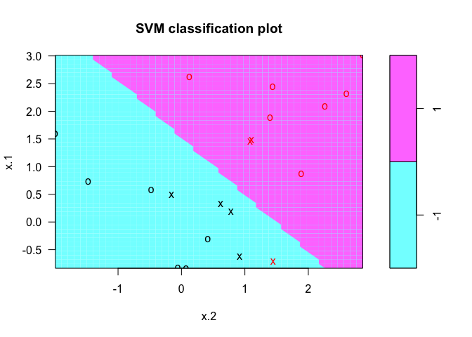
We begin by generating data with non-linear class boundaries.
set.seed(1)
x <- matrix(rnorm(200 * 2), ncol = 2)
x[1:100, ] <- x[1:100, ] + 2
x[101:150, ] <- x[101:150, ] - 2
y <- c(rep(1, 150), rep(2, 50))
dat <- data.frame(x = x, y = as.factor(y))
We can verify that the class boundaries are not linear by plotting the observations.
plot(x, col = y)
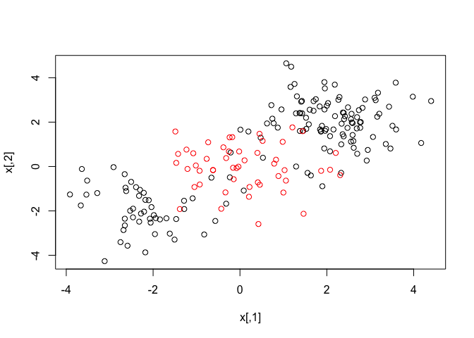
We split the data into training and test subsets and run the SVM classifier with kernel = "radial" parameter.
train <- sample(200, 100)
svmfit <- svm(y ~ ., data = dat[train, ], kernel = "radial", gamma = 1, cost = 1)
plot(svmfit, dat[train, ])
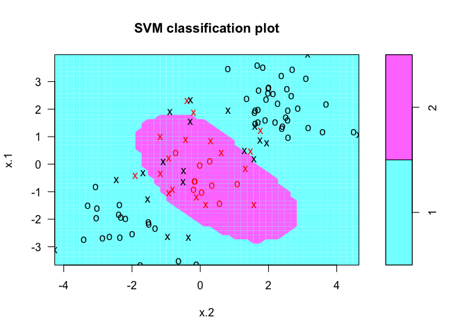
We can examine the model fit with the summary() function.
summary(svmfit)
##
## Call:
## svm(formula = y ~ ., data = dat[train, ], kernel = "radial",
## gamma = 1, cost = 1)
##
##
## Parameters:
## SVM-Type: C-classification
## SVM-Kernel: radial
## cost: 1
## gamma: 1
##
## Number of Support Vectors: 37
##
## ( 17 20 )
##
##
## Number of Classes: 2
##
## Levels:
## 1 2
We can use a larger value for the cost parameter and see if it reduces the training errors.
svmfit <- svm(y ~ ., data = dat[train, ], kernel = "radial", gamma = 1, cost = 1e+05)
plot(svmfit, dat[train, ])
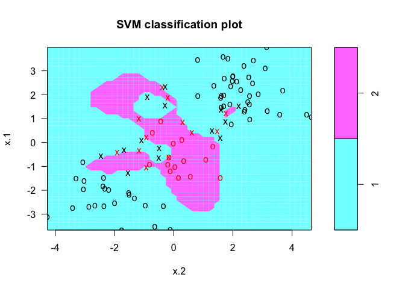
We can run cross-validation using the tune() function.
set.seed(1)
tune.out <- tune(svm, y ~ ., data = dat[train, ], kernel = "radial", ranges = list(cost = c(0.1, 1, 10, 100, 1000), gamma = c(0.5, 1, 2, 3, 4)))
summary(tune.out)
##
## Parameter tuning of 'svm':
##
## - sampling method: 10-fold cross validation
##
## - best parameters:
## cost gamma
## 1 2
##
## - best performance: 0.12
##
## - Detailed performance results:
## cost gamma error dispersion
## 1 1e-01 0.5 0.27 0.11595018
## 2 1e+00 0.5 0.13 0.08232726
## 3 1e+01 0.5 0.15 0.07071068
## 4 1e+02 0.5 0.17 0.08232726
## 5 1e+03 0.5 0.21 0.09944289
## 6 1e-01 1.0 0.25 0.13540064
## 7 1e+00 1.0 0.13 0.08232726
## 8 1e+01 1.0 0.16 0.06992059
## 9 1e+02 1.0 0.20 0.09428090
## 10 1e+03 1.0 0.20 0.08164966
## 11 1e-01 2.0 0.25 0.12692955
## 12 1e+00 2.0 0.12 0.09189366
## 13 1e+01 2.0 0.17 0.09486833
## 14 1e+02 2.0 0.19 0.09944289
## 15 1e+03 2.0 0.20 0.09428090
## 16 1e-01 3.0 0.27 0.11595018
## 17 1e+00 3.0 0.13 0.09486833
## 18 1e+01 3.0 0.18 0.10327956
## 19 1e+02 3.0 0.21 0.08755950
## 20 1e+03 3.0 0.22 0.10327956
## 21 1e-01 4.0 0.27 0.11595018
## 22 1e+00 4.0 0.15 0.10801234
## 23 1e+01 4.0 0.18 0.11352924
## 24 1e+02 4.0 0.21 0.08755950
## 25 1e+03 4.0 0.24 0.10749677
We can predict the classes on the test subset and examine the number of observations misclassified.
table(true = dat[-train, "y"], pred = predict(tune.out$best.model, newdata = dat[-train, ]))
## pred
## true 1 2
## 1 74 3
## 2 7 16
We use the ROCR package to produce ROC curves on the predictions from the test subset.
library(ROCR)
## Loading required package: gplots
##
## Attaching package: 'gplots'
##
## The following object is masked from 'package:stats':
##
## lowess
rocplot <- function(pred, truth, ...) {
predob <- prediction(pred, truth)
perf <- performance(predob, "tpr", "fpr")
plot(perf, ...)
}
Instead of getting the class labels, we can also get fitted values from svm() using decision.values = TRUE parameter.
svmfit.opt <- svm(y ~ ., data = dat[train, ], kernel = "radial", gamma = 2, cost = 1, decision.values = TRUE)
fitted <- attributes(predict(svmfit.opt, dat[train, ], decision.values = TRUE))$decision.values
We generate the ROC curve with the rocplot() function. We can also change the value of (\gamma) and see if it improves our predictions.
par(mfrow = c(1, 2))
rocplot(fitted, dat[train, "y"], main = "Training Data")
svmfit.flex <- svm(y ~ ., data = dat[train, ], kernel = "radial", gamma = 50, cost = 1, decision.values = TRUE)
fitted <- attributes(predict(svmfit.flex, dat[train, ], decision.values = T))$decision.values
rocplot(fitted, dat[train, "y"], add = T, col = "red")
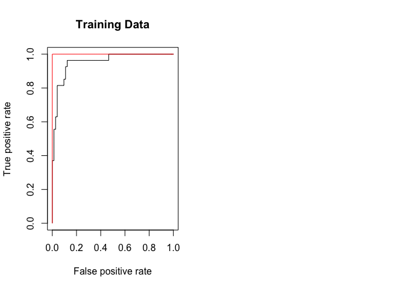
fitted <- attributes(predict(svmfit.opt, dat[-train, ], decision.values = T))$decision.values
rocplot(fitted, dat[-train, "y"], main = "Test Data")
fitted <- attributes(predict(svmfit.flex, dat[-train, ], decision.values = T))$decision.values
rocplot(fitted, dat[-train, "y"], add = T, col = "red")
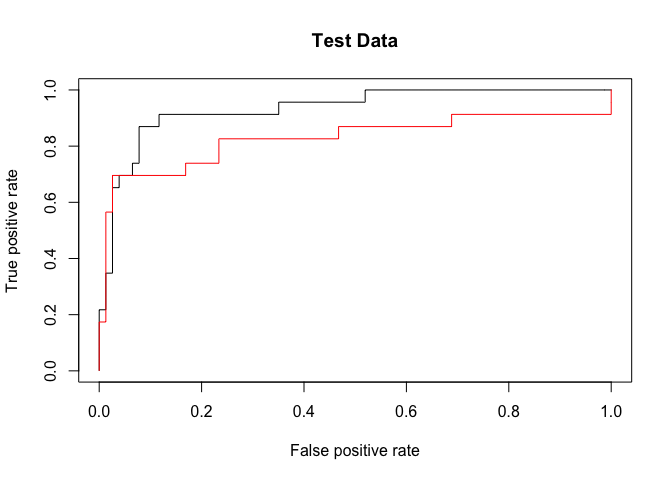
The svm() function can also be used to classify observations from multiple-classes.
set.seed(1)
x <- rbind(x, matrix(rnorm(50 * 2), ncol = 2))
y <- c(y, rep(0, 50))
x[y == 0, 2] <- x[y == 0, 2] + 2
dat <- data.frame(x = x, y = as.factor(y))
par(mfrow = c(1, 1))
plot(x, col = (y + 1))
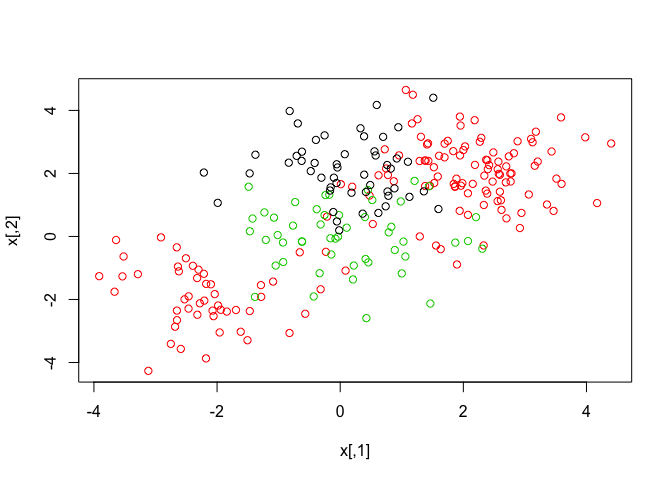
The svm() function now will perform multi-class classification since the dataset we generated now has three class labels.
svmfit <- svm(y ~ ., data = dat, kernel = "radial", cost = 10, gamma = 1)
plot(svmfit, dat)
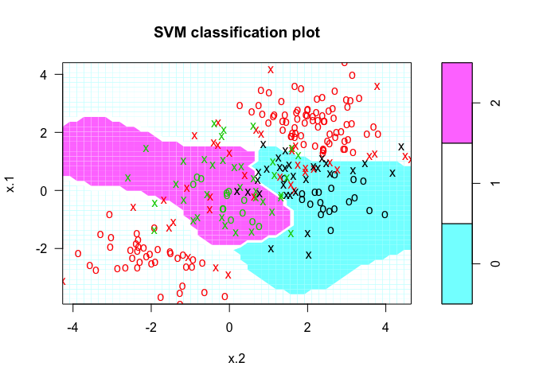
In this final exercise we run SVM classifier on gene expression data. We load the ISLR package and examine the Khan dataset.
library(ISLR)
names(Khan)
## [1] "xtrain" "xtest" "ytrain" "ytest"
dim(Khan$xtrain)
## [1] 63 2308
dim(Khan$xtest)
## [1] 20 2308
length(Khan$ytrain)
## [1] 63
length(Khan$ytest)
## [1] 20
We can examine the class labels associated with the training and test subsets.
table(Khan$ytrain)
##
## 1 2 3 4
## 8 23 12 20
table(Khan$ytest)
##
## 1 2 3 4
## 3 6 6 5
We use a linear kernel and run SVM classifier on the training subset.
dat <- data.frame(x = Khan$xtrain, y = as.factor(Khan$ytrain))
out <- svm(y ~ ., data = dat, kernel = "linear", cost = 10)
summary(out)
##
## Call:
## svm(formula = y ~ ., data = dat, kernel = "linear", cost = 10)
##
##
## Parameters:
## SVM-Type: C-classification
## SVM-Kernel: linear
## cost: 10
## gamma: 0.0004332756
##
## Number of Support Vectors: 58
##
## ( 20 20 11 7 )
##
##
## Number of Classes: 4
##
## Levels:
## 1 2 3 4
table(out$fitted, dat$y)
##
## 1 2 3 4
## 1 8 0 0 0
## 2 0 23 0 0
## 3 0 0 12 0
## 4 0 0 0 20
We can then predict the classes on the test subset using the trained classifier.
dat.te <- data.frame(x = Khan$xtest, y = as.factor(Khan$ytest))
pred.te <- predict(out, newdata = dat.te)
table(pred.te, dat.te$y)
##
## pred.te 1 2 3 4
## 1 3 0 0 0
## 2 0 6 2 0
## 3 0 0 4 0
## 4 0 0 0 5